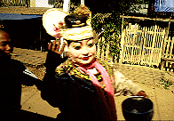
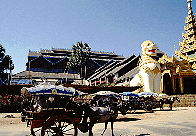
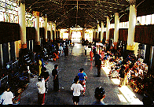
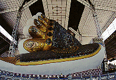
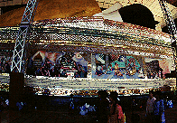

シュエターリャウンパゴダ/バゴー
ShweThalyaungPagoda/Bago
「ビルマの竪琴」で有名なバゴーの寝釈迦である。
小説では瞑想用の小部屋がある、ということになっているが実際にはない。
ま、アレは空想小説ですから細かい事は突っ込まないようにしましょう。

パゴダに行く途中で見かけた変な人。ホントにこーゆー顔なわけじゃなくかぶりもの。こうやって大道芸のようなことをして寄進をあつめているのだ。

外観。日本でいえば大仏殿にあたるのだろうがここのは工場か駅といった佇まい。この辺には馬車が多い。

参道には多数の土産物屋が。白檀、漆器、絵葉書、民俗衣装などなど。購買欲がスパークしそうになる。
これがかの寝釈迦である。ビルマの竪琴では兵隊さんたちが哭きながら「水島あ〜」と絶叫するが、どうもそんなイメージとは程遠い。
どちらかというとコミカルな感じ。
首のシワまで描き込んであるところが蛇足魂全開でヨロシイ。
鉄骨の柱に囲まれた寝釈迦さんはインダストリアルな建物の雰囲気に何故か馴染んでおり、巨大ロボの格納庫でチョットお昼寝、といった雰囲気だ。


足の裏と裏面。裏手にはこの寝釈迦がつくられた経緯が紙芝居のようにレリーフで説明されている。
次のスポットへGO!
ミャンマーパゴダ列伝のページへ
珍寺大道場 HOME